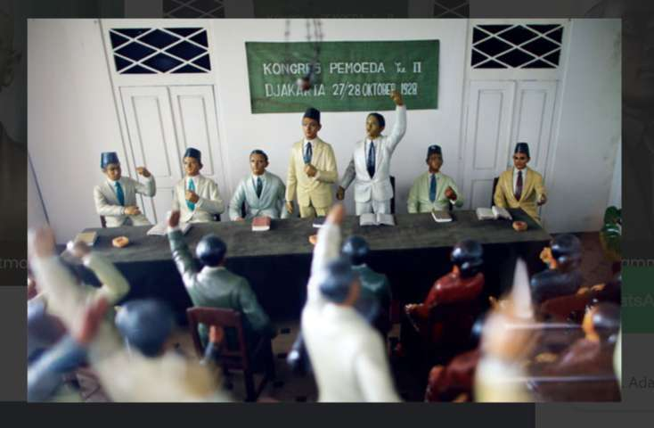

Sumpah Pemuda

Sumpah Pemuda merupakan ikrar kebangsaan yang dirumuskan melalui sebuah putusan Kongres Pemuda Kedua di Jakarta pada 27-28 Oktober 1928
Tanggal 28 Oktober adalah hari bersejarah bagi masyarakat Indonesia. Kita memperingatinya sebagai Hari Sumpah Pemuda. Hari di mana para pemuda berikrar untuk bersatu dalam satu bangsa, tanah air, dan bahasa yang sama. Sumpah Pemuda dicetuskan dalam Kongres Pemuda II tanggal 28 Oktober 1928. Namun sebelum itu, para pemuda sudah terlebih dahulu mengupayakan persatuan melalui Kerapatan Besar Pemuda (Kongres Pemuda I) yang dilaksanakan pada 30 April sampai 2 Mei 1926 di Batavia. Tujuan diselenggarakannya Kongres Pemuda I adalah untuk menyamakan persepsi antar berbagai organisasi kepemudaan di Indonesia sehingga terwujud dasar pokok lahirnya persatuan Indonesia yang sejajar dengan bangsa-bangsa lain di dunia (Abdul Rahman, et al., 2008). Namun, Kongres Pemuda I tidak membuahkan hasil setelah Ketua Kongres, Muhammad Tabrani, tidak sepakat dengan Mohammad Yamin terkait penggunaan istilah bahasa Melayu sebagai bahasa persatuan. Menurutnya, kalau tanah air dan bangsa bernama Indonesia, maka bahasa juga harus disebut bahasa Indonesia. Meski demikian, Kongres Pemuda I sudah menunjukkan adanya pemahaman satu nusa, satu bangsa, dan satu bahasa.
-Sejarah Lahirnya Sumpah Pemuda
Setelah Kongres Pemuda I selesai, beberapa pertemuan diadakan untuk membahas lebih lanjut terkait tindak lanjut dari Kongres Pemuda I. Setelah dua tahun, para pemuda yang dimotori PPPI (Persatuan Pemuda Pelajar Indonesia) mengadakan beberapa rapat yang dihadiri oleh perwakilan dari beberapa organisasi pemuda. Dari rapat tersebut menghasilkan keputusan bahwa Kongres Pemuda II akan dilaksanakan pada Oktober 1928 dengan susunan panitia sebagai berikut: Ketua : Soegondo Djojopoespito (PPPI) Wakil Ketua : R.M. Djoko Marsaid (Jong Java) Sekretaris : Muhammad Yamin (Jong Sumatranen Bond) Bendahara : Amir Sjarifoeddin (Jong Bataks Bond) Pembantu I : Djohan Mohammad Tjai (Jong Islamieten Bond) Pembantu II : R. Katjasoengkana (Pemoeda Indonesia) Pembantu III : R.C.L. Senduk (Jong Celebes) Pembantu IV : Johannes Leimena (Jong Ambon) Pembantu V : Mohamad Rocjani Soe'oed (Pemoeda Kaoem Betawi) Kongres Pemuda II dilangsungkan selama dua hari pada tanggal 27 dan 28 Oktober 1928 yang terbagi dalam tiga kali rapat yang masing-masing rapat dilaksanakan di gedung yang berbeda. Rapat pertama dilaksanakan di Gedung Katholieke Jongenlingen Bond (KJB), Sabtu 27 Oktober 1928. Dalam rapat tersebut, Mohammad Yamin menguraikan tentang arti penting persatuan untuk kebangsaan. Menurutnya terdapat beberapa faktor yang bisa memperkuat persatuan Indonesia, yaitu persamaan kultur, bahasa, dan hukum adat. Rapat kedua terjadi pada Minggu, 28 Oktober 1928 di Gedung Oost-Java Bioscoop membahas masalah pendidikan. Anak-anak harus dididik untuk memiliki karakter yang baik dan cinta tanah air. Anak-anak juga harus diberikan pelajaran merdeka tanpa melalui perintah ataupun pemaksaan. Harus ada keseimbangan antara pendidikan di sekolah dan di rumah. Rapat ketiga dilaksanakan di gedung Indonesische Clubgebouw Kramat pada tanggal 28 Oktober 1928. Pada rapat ketiga dijelaskan pentingnya gerakan kepanduan bagi persatuan bangsa. Kepanduan tidak bisa dipisahkan dari pergerakan nasional. Dalam rapat ketiga ini, sebelum rumusan hasil kongres dibacakan, terlebih dahulu diperdengarkan lagu ciptaan Wage Rudolf Supratman, yakni Indonesia Raya yang nantinya akan menjadi lagu kebangsaan Indonesia setelah merdeka. Setelahnya, putusan kongres dibacakan dan diikuti oleh seluruh peserta, sebuah putusan yang kita kenal sebagai Sumpah Pemuda.
Latar belakang sumpah Pemuda
.jpg)
terjadinya peristiwa Sumpah Pemuda bermula dari kesadaran para pemuda untuk bersatu sebagai suatu bangsa, yang akhirnya menandai perubahan pandangan dari perjuangan kedaerahan menjadi perjuangan nasional. muncul dari gagasan penyelenggaraan Kongres Pemuda Kedua yang berasal dari Perhimpunan Pelajar Pelajar Indonesia (PPPI). Diketahui bahwa PPPI merupakan sebuah organisasi pemuda yang anggotanya merupakan para pelajar dari seluruh indonesia.
Makna sumpah pemuda
yaitu menumbuhkan semangat dan komitmen generasi muda dalam persatuan dan kesatuan untuk lepas dari penjajahan dan menumbuhkan sikap patriotisme, nasionalisme, dan gotong royong, serta membentuk Bangsa Indonesia yang merdeka, bersatu, berdaulat, adil dan makmur.